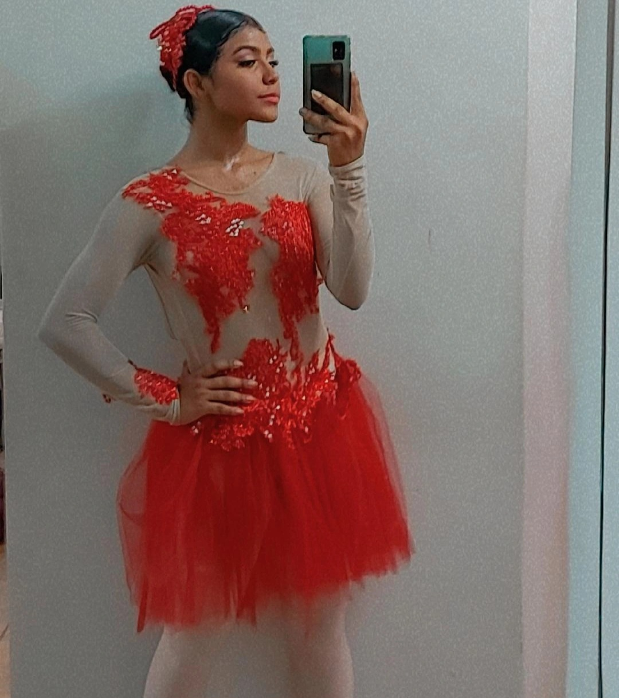
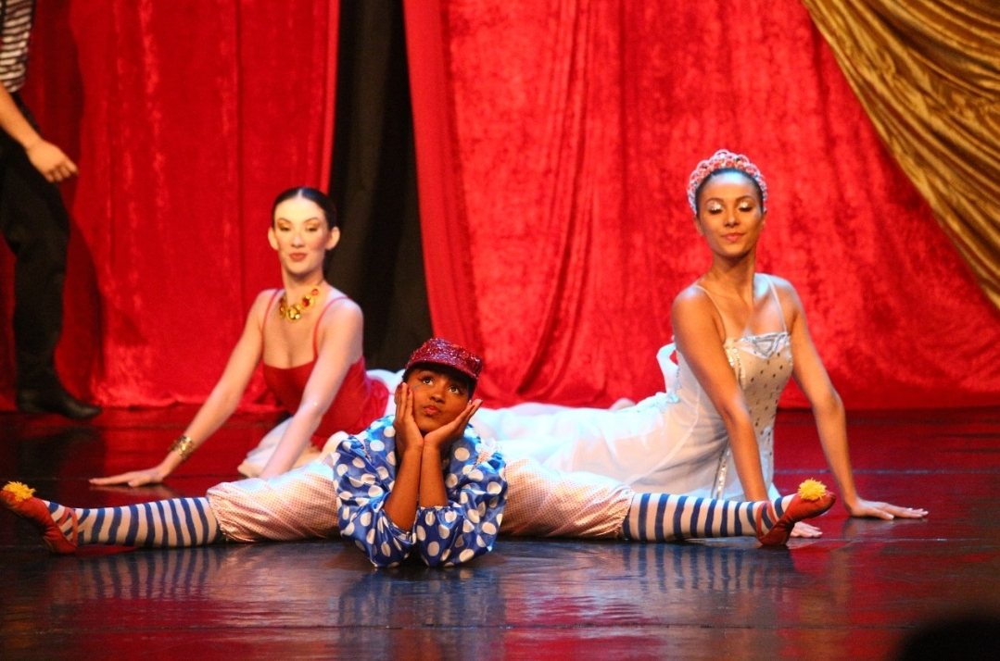
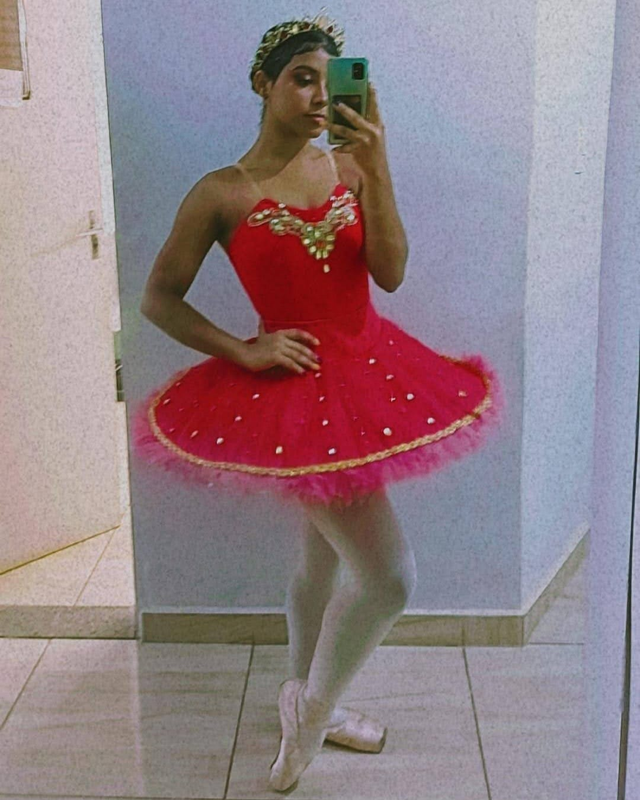
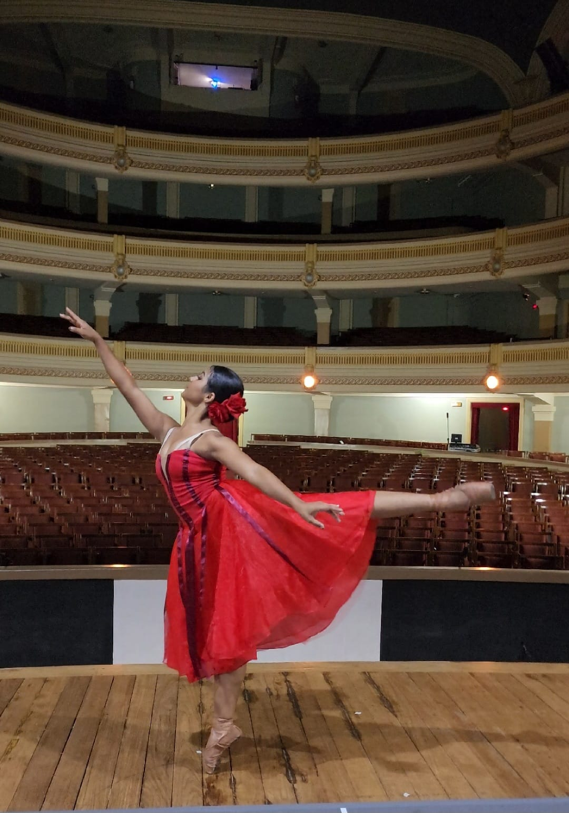
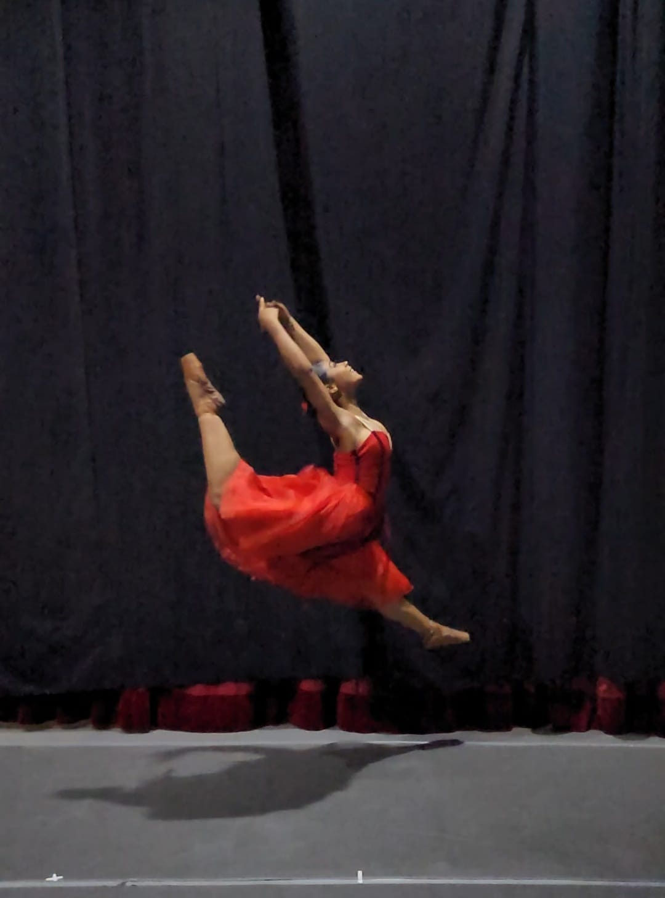
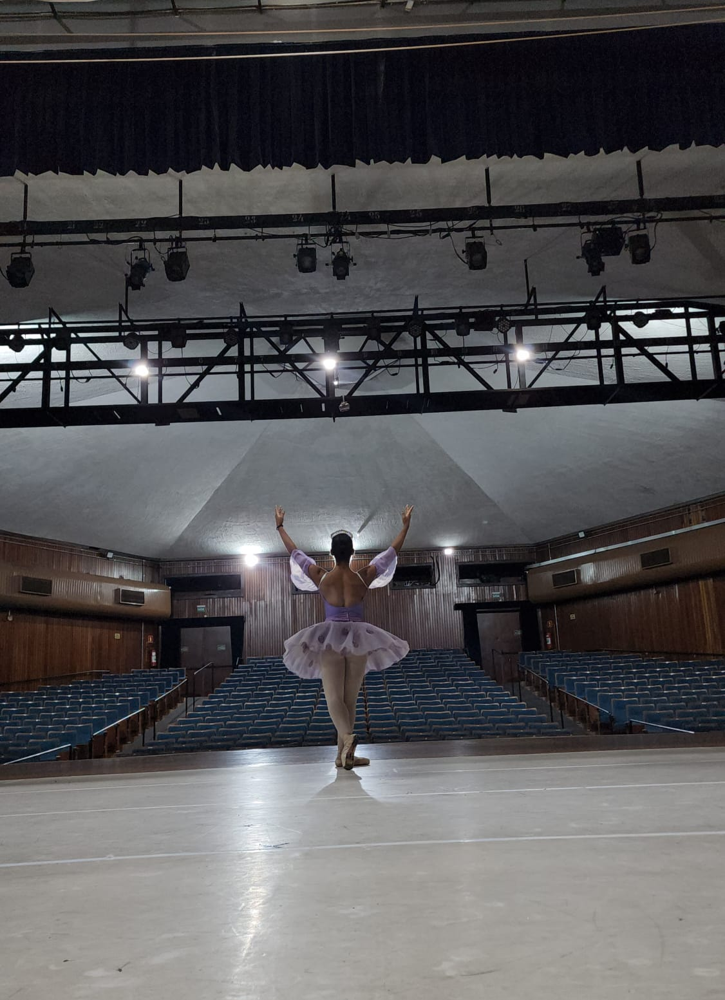
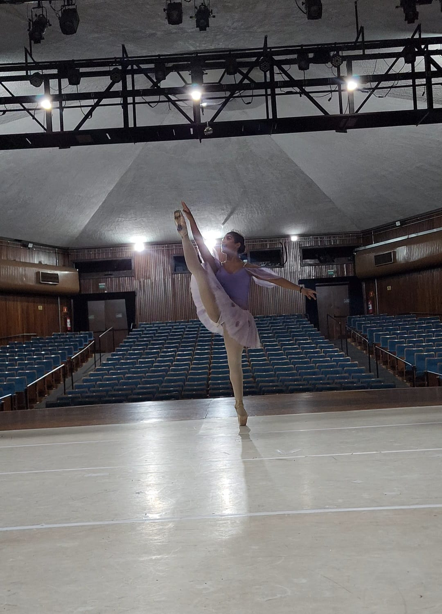

Algumas apresentações

Começando a fazer aulas de ballet em 2013

1º Apresentação de Ballet no Teatro municipal de Ribeirão Preto 2014

Ballet o Quebra-Nozes adaptado para "O Sonho de Nathaly". By: Ong Finac 2019

Ballet de repertorio "A bela adormecida" personagem: Fada Vermelha. by:Studio de dança Fabiola Poch 2021

Apresentação "O circo mistico" by:Wellness 2022

Espetaculo do Studio de dança Adriana Mazza, Personagem: Fada Vermelha 2022

O Quebra nozes - projeto ALMA 2023 com orquestra sinfonica de Ribeirão Preto - Teatro Pedro ||

O Quebra nozes - projeto ALMA 2023 com orquestra sinfonica de Ribeirão Preto - Teatro Pedro||

O Casamento de Aurora - Wellness 2023 - Teatro Municipal
